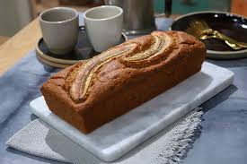
Budín de Banana
Listo en 50 minutos
Ingredientes:
- 2 bananas maduras
- 2 huevos
- 1 taza de azúcar
- 2 tazas de harina leudante
- ½ taza de aceite
- Esencia de vainilla
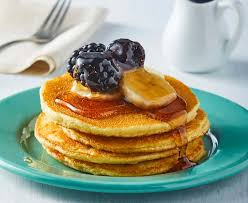
Panqueques Dulces
Listo en 20 minutos
Ingredientes:
- 1 taza de harina
- 2 huevos
- 1 taza de leche
- 1 cda de azúcar
- Manteca (para la sartén)
- Dulce de leche o fruta para rellenar
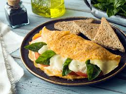
Omelette Caprese
Listo en 10 minutos
Ingredientes:
- 2 o 3 huevos
- Tomate en rodajas
- Queso mozzarella
- Hojas de albahaca
- Sal y aceite
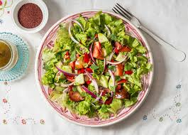
Ensalada de Pollo
Listo en 15 min
Ingredientes:
- lechuga
- Pollo
- Tomate

Tacos Mexicano
listo en 20 minutos
- carne
- cebolla caramelizada
- lechuga
- Tomate

Tallarines con Salsa Boloñesa
- 300 g de tallarines
- 250 g de carne picada
- 1 cebolla
- 2 dientes de ajo
- 1 zanahoria
- 400 g de tomate triturado
- 2 cdas de aceite de oliva
- Sal, pimienta y orégano a gusto
Ingredientes:
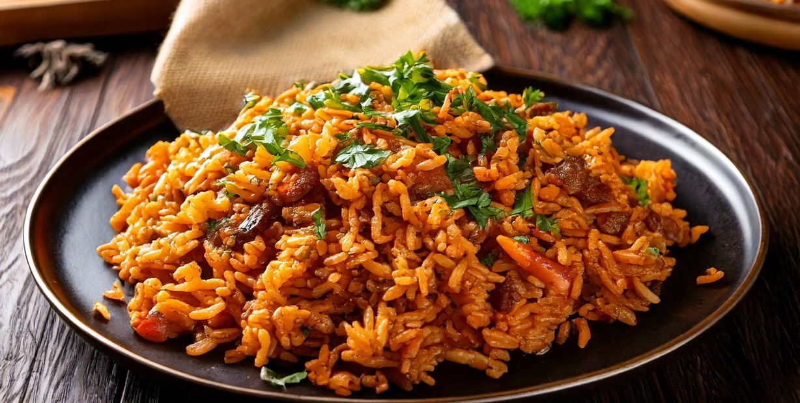
Arroz Chaufa
Listo en 25 minutos
Ingredientes:
- 2 tazas de arroz cocido
- 1 pechuga de pollo
- 2 huevos
- Cebolla de verdeo
- Salsa de soja
- Aceite
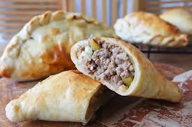
Empanadas de Carne Caseras
- 12 tapas de empanada para horno
- 300 g de carne picada
- 1 cebolla grande
- ½ morrón rojo
- 2 huevos duros picados
- 1 cdita de pimentón
- 1 cdita de comino
- Sal y pimienta a gusto
- Aceite para cocinar
Ingredientes:

Ñoquis con Salsa Rosa
Listo en 30 minutos
Ingredientes:
- 500 g de ñoquis
- 1 taza de salsa de tomate
- ½ taza de crema de leche
- Queso rallado
- Sal y pimienta
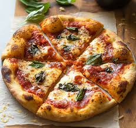
Pizza Casera
Listo en 35 minutos
Ingredientes:
- Masa de pizza
- Salsa de tomate
- Queso mozzarella
- Jamón o aceitunas (opcional)
- Orégano

Hamburguesa Casera
Listo en 20 minutos
Ingredientes:
- Pan para hamburguesa
- Carne picada (medallón)
- Lechuga y tomate
- Queso cheddar
- Huevo (opcional)
- Aderezos a gusto
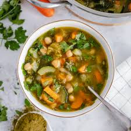
Sopa de Verduras
Listo en 40 minutos
Ingredientes:
- 1 papa
- 1 zanahoria
- 1 pedazo de zapallo
- Fideos pequeños
- Caldo de verduras
Pollo al Curry con Arroz
Listo en 30 minutos
Ingredientes:
- Pechuga de pollo en cubos
- 1 cebolla
- 1 cdita de curry
- 200 ml de crema de leche
- Arroz blanco cocido
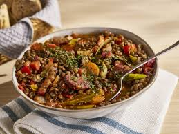
Guiso de Lentejas
Listo en 45 minutos
Ingredientes:
- 1 taza de lentejas
- 1 papa
- 1 zanahoria
- 1 cebolla
- ½ morrón rojo
- Caldo de verduras
- Sal y especias a gusto

Lasaña de Carne
Listo en 50 minutos
Ingredientes:
- Láminas de lasaña
- 500 g de carne picada
- 1 cebolla
- 400 g de salsa de tomate
- Bechamel (opcional)
- Queso rallado

Tortilla de Papas Clásica
- 4 papas medianas
- 5 huevos
- 1 cebolla (opcional)
- Aceite para freír
- Sal a gusto
Ingredientes:
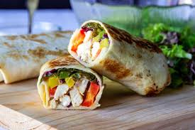
Wraps de Vegetales
Listo en 15 minutos
Ingredientes:
- Tortillas de trigo
- Zanahoria rallada
- Lechuga o espinaca
- Palta
- Queso crema
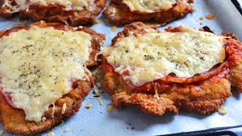
Milanesa Napolitana
Listo en 35 o 40 minutos
- bifes de carne (nalga, cuadrada o bola de lomo)
- 2 huevos
- 1 diente de ajo picado (opcional)
- Perejil picado (opcional)
- Sal y pimienta
- Pan rallado (cantidad necesaria)
- Aceite para freír
- 4 cucharadas de salsa de tomate
- 2 fetas de jamón cocido
- 4 fetas de queso (muzarella o el que tengas)
- Orégano (opcional)
La milanesa:
Para la napolitana:

Ensalada Vegetariana
Listo en 15 minutos
Ingredientes:
- Lechuga
- Tomate
- Zanahoria
- Palta
- Semillas

Flan Casero
Listo en 60 minutos
Ingredientes:
- Leche
- Huevos
- Azúcar
- Esencia de vainilla

Tostadas con Mermelada
Listo en 5 minutos
Ingredientes:
- Pan
- Manteca
- Mermelada

Fernet con Coca
Listo en 2 minutos
Ingredientes:
- Fernet
- Coca Cola
- Hielo
Contacto
Mail: sabores@cocina.com
Teléfono: 1234-5678
Nacionales
Aquí podés poner información sobre platos nacionales, historia, etc.